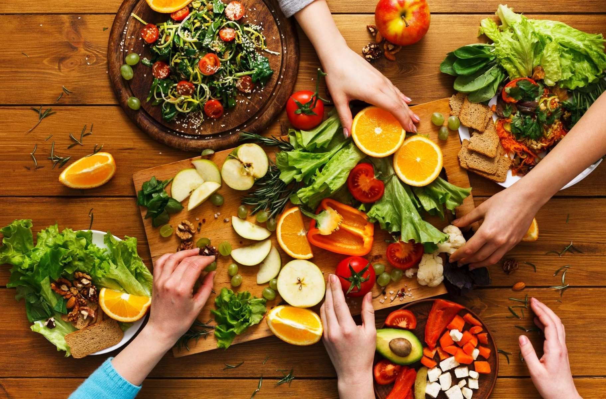

Caso Curioso #1: Frutas de temporada
Descubre por qué comer frutas y verduras de temporada no solo es más económico, sino también mejor para tu salud y el medio ambiente.
Ver caso
Descubre por qué comer frutas y verduras de temporada no solo es más económico, sino también mejor para tu salud y el medio ambiente.
Ver caso
Conoce cómo los pequeños agricultores chilenos están adoptando prácticas sostenibles para cuidar la tierra y producir alimentos más saludables.
Ver caso